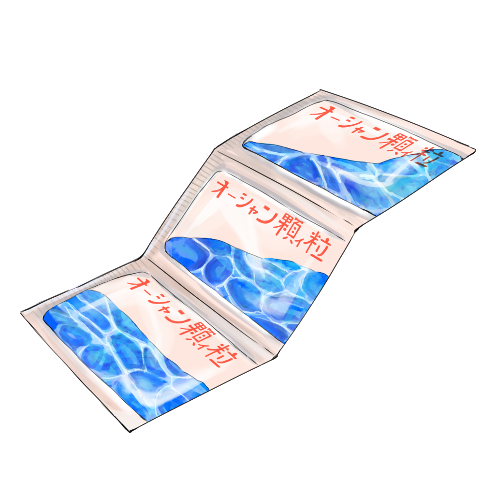

オーシャン顆ィ粒

【効果・効能】
強い夏の日差しに疲れた心身へ、避暑地のような清涼感を与える一服です。
波の音と海風が熱をやわらげ、張りつめた気持ちを
ゆっくりほぐしてくれます。
都会の喧騒の中でも気軽に服用でき、
遠出せずとも水辺の静けさを思い出しながら、
ほてりを鎮めたいときにおすすめです。
【成分】
・砂
・海
・空
・雲
・コンクリート
【服用時点】
涼みたいとき
【副作用】
砂が靴に入って不快になる可能性あり
【生産地】
トウキョウ
【製造会社名】
フジ製薬

製造者からひとこと
私は小学生時代に沖縄に住んでいたことがあり、
その頃はしょっちゅう海に行っていました。
東京に戻ってからも海が名残惜しく、
今でも休みの日などには海や運河に散歩に行きます。
「海は地球生命の母」という言葉もあるように、
海にはどこか圧倒されるものを感じます。
今回の場所においては、勝手ながら、
自然の象徴である海と、
人間の暮らしを表すレインボーブリッジや工業エリアの融合が
また色々感じさせます。